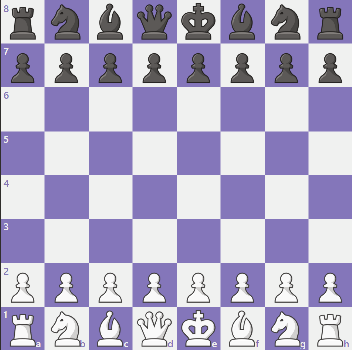

Gibt es eigentlich mehr als nur eine Schachvariante?

Tandem
Hier spielt man 2 gegen 2, also insgesamt zu viert. Dabei ist es wichtig, dass in jedem Team jeweils einer Schwarz und der andere Weiß spielt. Wenn ihr eine gegnerische Figur schlagt, müsst ihr diese eurem Mitspieler geben. Dieser muss dann entscheiden: Setze ich eine Figur ein oder ziehe ich eine Figur? Wenn eine Figur eingesetzt wird, ist der Zug vorbei. Zudem darf man durch das Einsetzen der Figur den Gegner nicht mattsetzen. Zudem dürfen die Bauern nicht auf die Reihen 1 oder 8 gestellt werden.

Blitzschach
Hier ist alles wie beim normalen Schach, mit der einzigen Ausnahme, dass man schnell spielen muss, da es eine zeitliche Begrenzung von 5 Minuten gibt.

Atomschach
Atomschach ist etwas speziell, denn hier wird anders geschlagen. Sobald eine Figur geschlagen wird, werden die geschlagene Figur und alle Figuren in einem Radius von einem Feld „in die Luft gesprengt“. Nur die umliegenden Bauern sind von den Explosionen ausgeschlossen. Wenn ein Bauer schlägt, wird dieser ebenfalls in die Luft gesprengt. Hier gewinnt man erst, sobald der gegnerische König in die Luft gesprengt wurde.